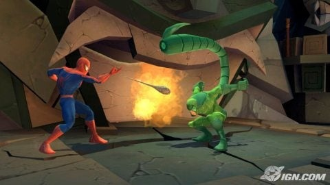
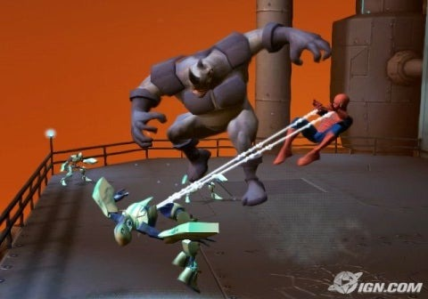
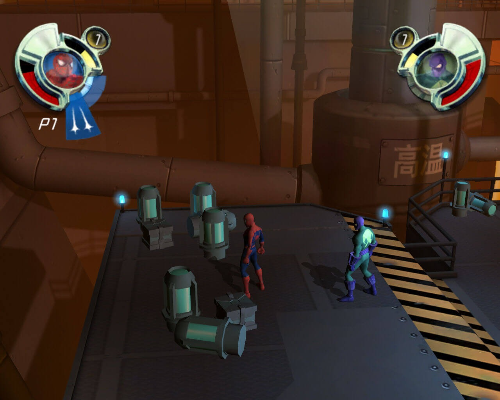

Spider-Man se encuentra a sí mismo perseguido por sus villanos de las películas. Él consigue ayuda del Nuevo
Duende
mientras combate al Duende Verde, Doctor Octopus, Hombre de Arena, y Venom. Los seis personajes son atacados
por una fuerza enemiga
uno por uno, los villanos empiezan a desaparecer. Mientras tanto, Spider-Man es rescatado por Nick Fury de
S.H.I.E.L.D., quien le informa que el meteoro
que había traído el simbionte a la Tierra se ha roto en la atmósfera de la Tierra y cinco pedazos más se han
distribuido en cinco localidades distintas en el globo terraqueo.
Además que este juego funciona como un extraño what if para la saga de películas de Sam Raimi.


Jugabilidad
El juego funciona con un esquema de beat em up en tercera persona el cual también cuenta con un modo
cooperativo de forma local.

Conclusión
Recomendamos ampliamente este juego si eres fan de los beat em up, del cabeza de red o comics de Marvel
debido a que habrá mas de un personaje sorpresa
que no aparecieron en el universo de Raimi.